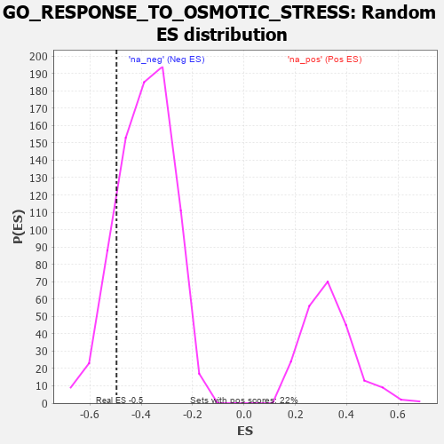

| | | Dataset | 7d |
| Phenotype | NoPhenotypeAvailable |
| Upregulated in class | na_neg |
| GeneSet | GO_RESPONSE_TO_OSMOTIC_STRESS |
| Enrichment Score (ES) | -0.49643493 |
| Normalized Enrichment Score (NES) | -1.2850308 |
| Nominal p-value | 0.15256411 |
| FDR q-value | 0.492115 |
| FWER p-Value | 1.0 |
Table: GSEA Results Summary
 Fig 1: Enrichment plot: GO_RESPONSE_TO_OSMOTIC_STRESS
Fig 1: Enrichment plot: GO_RESPONSE_TO_OSMOTIC_STRESS
Profile of the Running ES Score & Positions of GeneSet Members on the Rank Ordered List
| PROBE | GENE SYMBOL | GENE_TITLE | RANK IN GENE LIST | RANK METRIC SCORE | RUNNING ES | CORE ENRICHMENT | | 1 | BAX | | | 387 | 0.711 | 0.0028 | No |
| 2 | PKN1 | | | 535 | 0.619 | 0.0291 | No |
| 3 | XRCC6 | | | 694 | 0.560 | 0.0497 | No |
| 4 | NFAT5 | | | 1856 | 0.326 | -0.0727 | No |
| 5 | MICU1 | | | 1954 | 0.313 | -0.0623 | No |
| 6 | DDX3X | | | 3388 | 0.091 | -0.2360 | No |
| 7 | NOLC1 | | | 3623 | 0.056 | -0.2614 | No |
| 8 | WNK3 | | | 4153 | -0.034 | -0.3255 | No |
| 9 | FMO1 | | | 4181 | -0.038 | -0.3261 | No |
| 10 | LETM1 | | | 4644 | -0.127 | -0.3751 | No |
| 11 | MYLK | | | 4651 | -0.128 | -0.3665 | No |
| 12 | XRCC5 | | | 4946 | -0.187 | -0.3900 | No |
| 13 | PDPK1 | | | 5043 | -0.207 | -0.3871 | No |
| 14 | EFHD1 | | | 5057 | -0.211 | -0.3735 | No |
| 15 | ANXA7 | | | 5827 | -0.413 | -0.4403 | No |
| 16 | STK39 | | | 6274 | -0.563 | -0.4557 | Yes |
| 17 | DYSF | | | 6481 | -0.654 | -0.4343 | Yes |
| 18 | TRPV4 | | | 6515 | -0.668 | -0.3900 | Yes |
| 19 | CLN3 | | | 6580 | -0.699 | -0.3474 | Yes |
| 20 | EGFR | | | 6708 | -0.765 | -0.3080 | Yes |
| 21 | TSPO | | | 7194 | -1.065 | -0.2919 | Yes |
| 22 | KMO | | | 7432 | -1.308 | -0.2271 | Yes |
| 23 | CASP3 | | | 7747 | -1.902 | -0.1289 | Yes |
| 24 | PKD2 | | | 7822 | -2.167 | 0.0187 | Yes |
Table: GSEA details [plain text format]

Fig 2: GO_RESPONSE_TO_OSMOTIC_STRESS: Random ES distribution
Gene set null distribution of ES for GO_RESPONSE_TO_OSMOTIC_STRESS